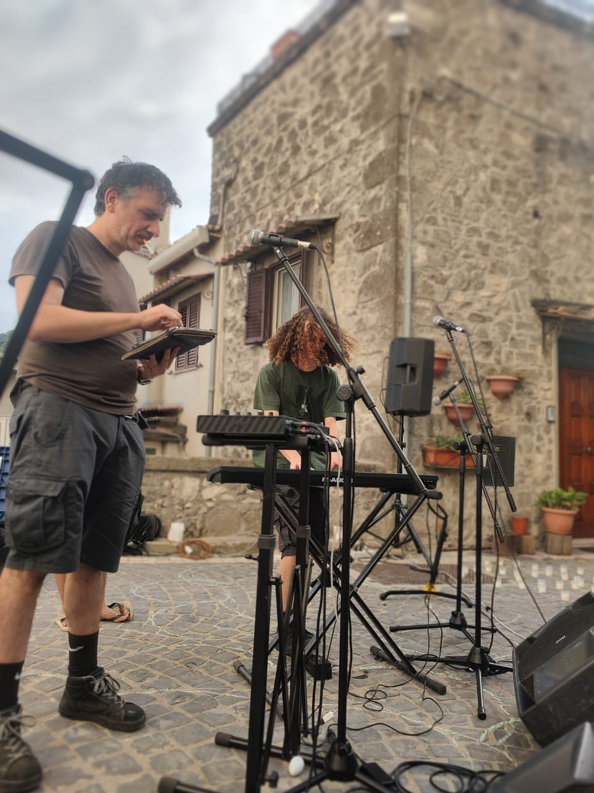
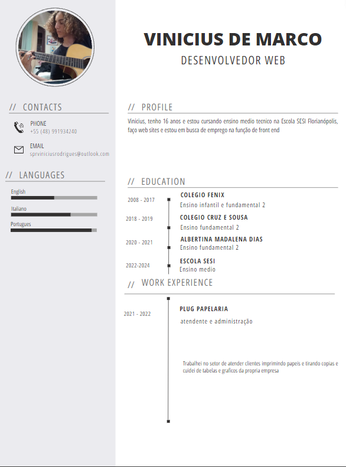

Sobre mim
Vinicius De Marco Rodrigues
Tenho 17 anos e estou cursando o ensino medio tecnico na escola Sesi em Florianópolis e tenho muitos projetos para mostrar relacionados a programação. Meu principal foco atualmente é na area musical, sou multi instrumentista e atuo como baterista em uma banda, vejo a musica e arte em geral como uma forma de paz e relaxamento que me faz ficar tranquilo. Atualmente estou trabalhando com back end em uma empresa na area de banco de dados e graças ao Sesi consegui entrar nessa empresa com o basico que me ofereceu e me fez gostar mais.
e-mail: vinicius_rodrigues11@estudante.sesisenai.org.br
Curriculo
Redes